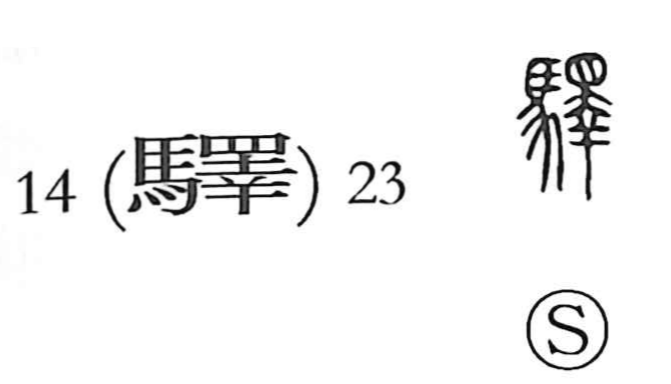

Explanation
驛 is a phono-semantic character: the horse on the left signals the relay system of horse posts, while the right-hand component 睪 gives the sound eki and carries an image. In early forms, 睪 portrayed an animal’s body: the eyes above, and below—shaped like what later appears as 幸—the paws and feet. As that body is taken apart and loosened, the graph suggests something coming undone and extending onward. The related character 釋 combines the “claw” 釆 with the same figure to mean the dismembering of a carcass (whereas 解 depicts cutting off an ox’s horns); 釈 is a later abbreviation using 尺 to mark the on-reading. From this sense of something stretched out in succession arose the idea of horse relays strung along a long road—the umaya—hence “post/relay station.” In modern Japanese the character is also written 駅 and denotes railway, bus, or metro stations.